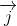
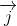
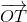
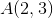
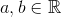
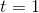

Reper cartezian în plan
Definiția G17: Reper cartezian în plan
Reperul cartezian ortogonal în plan este un sistem de două drepte ortogonale care au aceeași origine, notată cu  .
.
Axa  se numește axa absciselor, cu
se numește axa absciselor, cu  reprezentând versorul (vectorul unitate) pe această axă, iar axa
reprezentând versorul (vectorul unitate) pe această axă, iar axa  este axa ordonatelor, cu versorul .
este axa ordonatelor, cu versorul .

Dacă considerăm punctul în reperul cartezian, atunci putem descompune vectorul  după versorii , respectiv , cum am văzut în subcapitolul anterior, astfel:
.
Analog procedăm și în atunci când considerăm două puncte  , respectiv .
, respectiv .
Atunci, descompunerea vectorului  după versorii , respectiv , va fi:
după versorii , respectiv , va fi:
.
În continuare vei afla care sunt coordonatele vectorului în reperul cartezian, precum și cum poți calcula lungimea acestui vector.
Coordonate carteziene
Mai sus, am văzut că descompunerea vectorului după versorii , respectiv este:
.
Coordonatele vectorului în reperul cartezian sunt reprezentați de coeficienții versorilor , respectiv și le vom nota astfel:
.
Deasemenea, putem să calculăm lungimea acestui vector după următoarea formulă:
 .
.
Un alt aspect important legat de acest lucru este faptul că dacă ni se dau două puncte cărora le cunoaștem coordonatele, atunci putem să aflăm coordonatele mijlocului acestui segment.
Astfel, fie și două puncte, iar  mijlocul segmentului
mijlocul segmentului ![[TS]](../../media/webbooks/616/4916/images/equations/thpf5bddqwpw1yefbil6dg==.gif) .
.
Atunci coordonatele punctului  se calculează astfel:
se calculează astfel:
,
respectiv
.
În continuare, pentru a înțelege noțiunile prezentate în aceste secțiuni, profesorii noștri ți-au pregătit rezolvarea completă și pas cu pas a următoarei probleme:
Fie punctele , , și , cu .
- Să se afle coordonatele vectorilor
 și .
și . - Să se calculeze lungimea vectorului
 și să se afle coordonatele mijlocului al segmentului .
și să se afle coordonatele mijlocului al segmentului . - Să se determine numerele
 și
și  , știind că
, știind că  este mijlocul segmentului .
este mijlocul segmentului .
Soluție:
- Aflăm coordonatele vectorului :
.
Așadar, coordonatele vectorului sunt: .
Aflăm coordonatele vectorului :
.
Deci coordonatele acestui vector sunt: .
- Calculăm lungimea vectorului :
.
Să calculăm coordonatele punctului .
Deoarece acest punct de află la mijlocul segmentului , aplicăm formulele de aflare a coordonatelor acestui punct și obținem că:
Deci, mijlocul segmentului este punctul de coordoante: .
- Pentru a găsi cele două numere, , respectiv , vom aplica aceleași formule, ținând cont că este mijlocul segmentului .
Astfel avem:
Așadar, numerele căutate sunt , respectiv .
În continuare, profesorii noștri experimentați de matematică, ți-au pregătit două aplicații.
Punctul care împarte un segment într-un raport dat
Fie un triunghi, iar pe latura fixăm punctul  , astfel încât .
, astfel încât .
Atunci, are loc relația:
.
Vom face demonstrația acestei formule, iar în continuare o vom lua ca atare.
Pentru a demonstra acesă formulă, mai întâi să desenăm triunghiul și să evidențiem vectorii , și :

Vom porni de la informația dată în ipoteză, și anume că .
Cu ajutorul regulii triunghiului, vom exprima vectorul în triunghiul , respectiv vectorul în triunghiul .
Așadar, avem că:
,
respectiv
.
Înlocuim cele două relații de mai sus în relația din ipoteză și obținem că:
.
Așadar, aceasta este formula punctului care împarte un segment într-un raport dat.
Teorema vectorială a medianei
Această aplicație este practic un caz particular al aplicației anterioare ( „Punctul care împarte un segment într-un raport dat” ).
Analog aplicației anteriore, luăm un triunghi și un punct pe o latură.
Fie un triunghi oarecare. Fixăm punctul , astfel încât acesta să împartă latura în două.
Așadar, avem că reprezintă mediana și avem relația , (adică  în formula din pagina anterioară).
Desenăm acest triunghi, precum și vectorii , și . De asemenea, evidențiem și faptul că punctul este mijlocul laturii :

Folosind relația din aplicația precedentă  , pentru , succesiv, obținem că:
, pentru , succesiv, obținem că:
.
Așadar, teorema vectorială a medianei unui triunghi ne spune că: .